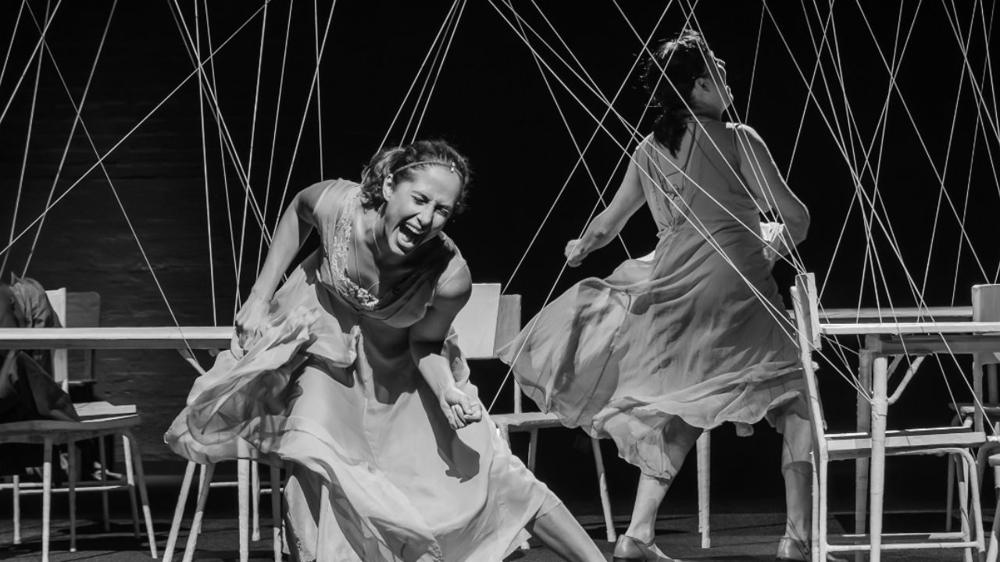

Bete Coelho e Camila Pitanga estreiam “Lia Lia” em São Paulo

Adaptação do romance de Caetano Galindo chega ao Centro Cultural FIESP em curta temporada gratuita da companhia Teatrofilme
Pela primeira vez juntas no palco, Bete Coelho e Camila Pitanga apresentam “Lia Lia” em São Paulo. A montagem da companhia Teatrofilme estreia na capital paulista em 24 de julho, no Centro Cultural FIESP, após circulação por cidades do interior do estado.
Inspirado no romance “Lia: Cem vistas do Monte Fuji”, de Caetano W. Galindo, o espetáculo fica em cartaz até 9 de agosto, com entrada gratuita e reservas pelo sistema Meu SESI. A direção é assinada por Bete Coelho e Gabriel Fernandes, com direção de arte de Daniela Thomas.
A peça acompanha a vida de Lia como um álbum de retratos incompleto. Fragmentos, memórias, sensações e encontros constroem, aos poucos, uma personagem que recusa uma identidade única ou facilmente definível. Interpretada por Bete e Camila, Lia aparece em diferentes fases, estados e contextos, como se cada olhar revelasse apenas uma parte possível de sua existência.
O livro de Caetano Galindo, publicado pela Companhia das Letras em 2024, é o primeiro romance de ficção do autor e tem como inspiração a série “Cem vistas do Monte Fuji”, de Katsushika Hokusai. Na transposição para o teatro, a estrutura fragmentada da obra literária se transforma em uma experiência cênica que aproxima memória, linguagem teatral e cortes de composição próximos ao cinema.
A adaptação é assinada por Bete Coelho, em criação conjunta com a companhia, e conta com textos inéditos de Galindo, incluindo trechos não publicados na edição original do romance.
“O elenco tomou posse do texto e essa é a melhor maneira de fazer uma adaptação com brilho. Foram capazes de entender os detalhes da estrutura literária e traduzir isto para o teatro, a partir de fragmentos de um livro que já é composto por fragmentos”, afirma Caetano Galindo.
Além de Bete Coelho e Camila Pitanga, o elenco reúne Roberto Audio, Laís Lacôrte e Lindsay Castro Lima. A montagem conta ainda com coro cênico formado por alunas do Núcleo de Artes Cênicas do SESI-SP, reforçando a proposta de circulação e formação que acompanha o projeto.
Para Bete Coelho, “Lia Lia” permite explorar diferentes gramáticas de cena. “Estamos muito felizes de como conseguimos transpor para o teatro a beleza e a grandiosidade desta obra. São personagens muito bem delineadas e uma trama concebida de uma forma autoral, ousada e absolutamente contemporânea, que nos permite expressar diversos elementos das gramáticas teatral e cinematográfica”, afirma.
Camila Pitanga chega à Teatrofilme como nova integrante da companhia e destaca o desejo antigo de contracenar com Bete. “Fazer parte da Teatrofilme é a realização de um desejo acalentado há muitos anos: contracenar com Bete Coelho. A Bete é uma atriz que me emociona e uma diretora que me inspira preciosos novos caminhos”, diz.
Na encenação, a não linearidade é um dos princípios centrais. Cenas surgem como recortes de uma vida em movimento, sem obedecer a uma ordem tradicional. A estrutura dialoga com um repertório já presente na trajetória da Teatrofilme, companhia que trabalha com dramaturgias atravessadas por elementos da linguagem cinematográfica.
“Narrativas não-lineares têm composto nosso repertório desde sempre, como esta construção inquietante e desafiadora proposta por Galindo: recortes da vida apresentados como uma sucessão de momentos que se interligam”, afirma Gabriel Fernandes.
A cenografia de Daniela Thomas, criada em parceria com Felipe Tassara, parte de fios e linhas que sugerem costuras, rasgos e conexões. O desenho de luz é de Beto Bruel, o figurino de Renata Correa e a direção musical de Felipe Antunes.
Antes de chegar à capital, “Lia Lia” passou por Sorocaba, Ribeirão Preto, Itapetininga, São José dos Campos, Rio Claro e Campinas. A temporada no Centro Cultural FIESP encerra a circulação pelo estado de São Paulo, realizada pelo SESI-SP.
Mais do que contar a história de uma personagem, “Lia Lia” observa como uma vida pode ser composta por fragmentos, versões e olhares. No palco, Lia é vista e também vê o mundo, em uma experiência que transforma a existência em quebra-cabeça cênico.
Serviço
Lia LiaTexto: Caetano W. Galindo
Adaptação: Bete Coelho
Direção: Bete Coelho e Gabriel Fernandes
Direção de arte: Daniela Thomas
Produção: Teatrofilme
Realização: SESI-SP
Elenco: Bete Coelho, Camila Pitanga, Roberto Audio, Laís Lacôrte e Lindsay Castro Lima
Temporada: de 24 de julho a 9 de agosto de 2026
Local: Centro Cultural FIESP — Teatro do SESI São Paulo
Endereço: Avenida Paulista, 1313 — São Paulo — SP
Referência: em frente à estação Trianon-Masp da Linha 2-Verde do Metrô
Entrada: gratuita
Reservas: pelo site Meu SESI
Informações: (11) 3322-0050
Duração: 80 minutos
Classificação indicativa: 14 anos
Acessibilidade: sessões de sexta-feira têm tradução em Libras
Instagram: @teatrofilme
As reservas são liberadas em lotes semanais pelo sistema Meu SESI.